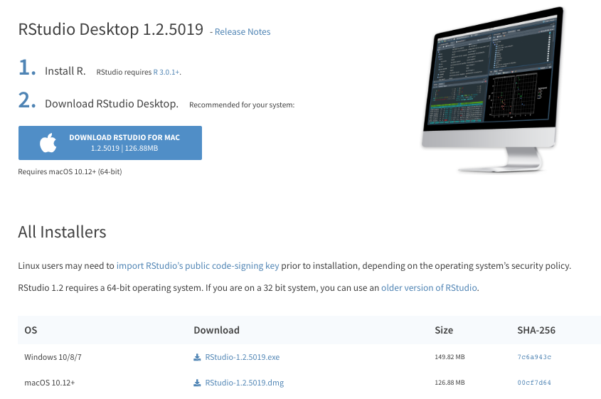
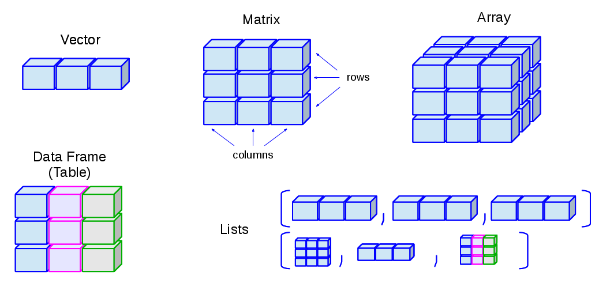
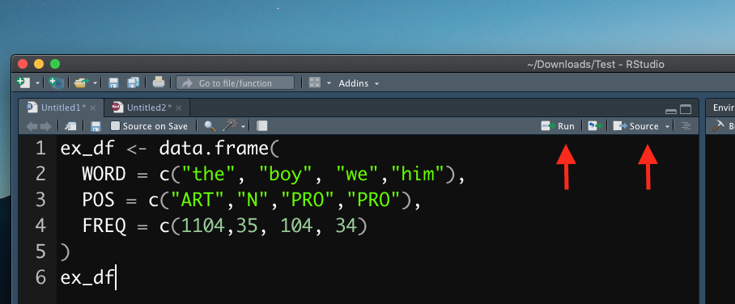
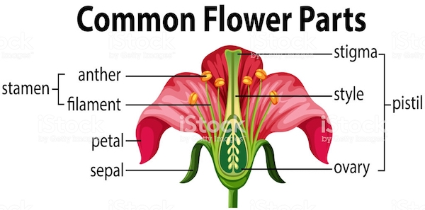

Chapter 2 R Fundamentals
2.2 Installing RStudio
After you install R, you may install RStudio. RStudio is an editor which can help you write R codes. A good analogy is that R is the engine and Rstudio is the dashboard of the car.
Please download the right version that is compatible with your PC operating system.
- https://www.rstudio.com/download
- Choose
RStudio Desktop

-
Important notes:
- Do not have Chinese characters in your directory names or on the path to the files
-
Do not have spaces and weird symbols in your file path:
-
D:/R -
D:/Rstudio -
/User/Alvinchen/
-
2.3 The Interface of Rstudio
When you start Rstudio, you will see an interface as follows:
Figure 2.1: Rstudio Interface
- Rstudio Interface:
- Editor: You creat and edit R-related files here (e.g.,
*.r,*.Rmdetc.) - Console: This is the R engine, which runs the codes we send out either from the R-script file or directly from the console input
- Output: You can view graphic outputs here
- Editor: You creat and edit R-related files here (e.g.,
The R console is like a calculator. You can type any R code in the console after the prompt > and run the code line by line by pressing enter.
1 + 1[1] 2log(10)[1] 2.3025851:5[1] 1 2 3 4 5Or alternatively, we can create an R script in Rstudio and write down lines of R codes to be passed to the R console. This way, we can run the whole script all at once. This is the idea of writing a program.
In the above example (Figure 2.1), I wrote a few lines of codes in a R script file (cf. the Editor frame) and asked R to run these lines of codes in the R Console. And the graphic output of the R script was printed in the Output frame.
scores <- rnorm(1000, mean = 75, sd = 5.8)
plot(density(scores))
hist(scores)
boxplot(scores)\(2^{2+1}-4+64^{(-2)^{2.25-\frac{1}{4}}}\)
= 16777220
2.4 Assignment
R works with objects of many different classes, some of which are defined in the base R while others are defined by specific libaries/environments/users.
You can assign any object created in R to a variable name using <-:
x <- 5
y <- "wonderful"Now the objects are stored in the variables. You can print out the variables by either making use of the auto-printing (i.e., the variable name itself auto-prints its content) or print():
x[1] 5print(x)[1] 5y[1] "wonderful"print(y)[1] "wonderful"2.5 Data Structure
In R, the most primitive object is a vector. There are two types of primitive vectors: (a) numeric and (b) character vectors. In our previous examples, x is a numeric vector of one element; y is a character vector of one element. All elements in the vector have to be of the same data type.
You use c() to create a vector of multiple elments. Within the parenthesis, you concatenate each element of the vector by ,:
x2 <- c(1, 2, 3, 4, 5, 6)
x2[1] 1 2 3 4 5 6y2 <- c("wonderful", "excellent", "brilliant")
y2[1] "wonderful" "excellent" "brilliant"Other data structures that we often work with include:
- List: a vector-like structure, but can consist of elements of different data types
- Matrix: a two-dimensional vector, where all elements have to be of the same data type
- Data Frame: a spreadsheet-like table, where columns can be of different data types
ex_list <- list("First element", 5:10, TRUE)
print(ex_list)[[1]]
[1] "First element"
[[2]]
[1] 5 6 7 8 9 10
[[3]]
[1] TRUEex_array <- matrix(c(1, 5, 6, 3, 8, 19), byrow = T, nrow = 2)
ex_array [,1] [,2] [,3]
[1,] 1 5 6
[2,] 3 8 19ex_df <- data.frame(WORD = c("the", "boy", "you", "him"), POS = c("ART", "N", "PRO", "PRO"), FREQ = c(1104,
35, 104, 34))
ex_dfThe following graph shows you an intuitive understanding of the data structures in R. We will discuss more on data structures in Chapter 4.

2.6 Function
Function is also an object class. There are many functions pre-defined in the R-base libraries.
class(c)[1] "function"class(vector)[1] "function"class(print)[1] "function"To instruct R to do things more precisely, a function call usually has many parameters to specify. Take the earlier function matrix() for example. It is a pre-defined function in the R base library.
ex_array <- matrix(c(1, 5, 6, 3, 8, 19), byrow = T, nrow = 2)
ex_array [,1] [,2] [,3]
[1,] 1 5 6
[2,] 3 8 19When creating a matrix, we specify the values for the parameters, byrow = and nrow =. These specifications tell R to create a matrix with N rows and arrange the numbers by rows. The actual values of the parameters that we use, i.e., T and 2, are referred to as arguments.
Parameter is a variable in the declaration of function. Argument is the actual value of this variable that gets passed to function.
Most importantly, we can define our own function, which is tailored to perform specific tasks. All self-created functions need to be defined first in the R environment before you can call them.
- Define own functions:
print_out_user_name <- function(name = "") {
cat("The current username is: ", name, "\n")
}- Call own functions:
print_out_user_name(name = "Alvin Cheng-Hsien Chen")The current username is: Alvin Cheng-Hsien Chen print_out_user_name(name = "Ada Lovelace")The current username is: Ada Lovelace make_students_happy(), which takes a multi-element numeric vector, and returns also a numeric vector, with the value of each element to be the square root of the original value multiplied by 10.
student_current_scores <- c(20, 34, 60, 87, 100)
make_students_happy(old_scores = student_current_scores)[1] 44.72136 58.30952 77.45967 93.27379 100.000002.7 Vectorization
Many operations in R are vectorized, meaning that operations occur in parallel in certain R objects. This allows you to write code that is efficient, concise, and easier to read than in non-vectorized languages.
The simplest example of vectorized functions is when adding two vectors together.
x <- 1:4
y <- 6:9
z <- x + y
z[1] 7 9 11 13Without vectorization, you mean need to do the vector adding as follows:
z <- numeric(length = length(x))
for (i in 1:length(x)) {
z[i] <- x[i] + y[i]
} # endfor
z[1] 7 9 11 13Other common vectorized functions include:
x >= 5[1] FALSE FALSE FALSE FALSEx < 2[1] TRUE FALSE FALSE FALSEy == 8[1] FALSE FALSE TRUE FALSEFor more information on vectorization, please watch the following youtube clip from Roger Peng.
2.8 Script
In our earlier demonstrations, we ran R codes by entering each procedure line by line. We can create one script file with the Editor of Rstudio and include all our R codes in the file, which usually has the file extension of .R. And then we can run the whole script in the R script all at once in the Rstudio.
First you open the *.R script file in Rstudio, which should appear in the Editor frame of the Rstudio. To run the whole script from start to the end, select all lines in the script file and press ctrl/cmd + shift + enter. To run a particular line of the script, put your mouse in the line and press ctrl/cmd + enter.

2.9 Library
R, like other programming languages, comes with a huge database of packages and extensions, allowing us to do many different tasks without worrying about writing the codes all from the scratch. In CRAN Task Views, you can find specific packages that you need for particular topics/tasks.
To install a package (i.e., library):
install.packages("tidyverse")
install.packages(c("ggplot2", "devtools", "dplyr"))In this course, I would like to recommend all of you to install the package tidyverse, which is a bundle including several useful packages for data analysis. During the installation, if you are asked about whether to install the package from source, please enter yes (See below for more detail).
During the R package installation, if you see messages like installation of package XXX had non-zero exit status, this indicates that the package has NOT been properly installed in your R environment. That is, something is WRONG (See below as well). You need to figure out a way to solve the issues indicated in the error messages so that you can successfully install the package in your R system.
Before you install R packages from source, you need to install a few R tools for your operating system. These tools are necessary for you to build the R packages from the source.
For MacOS Catalina users, please install the following applications on your own. They are necessary for building R packages from source.
-
Command Line Tools for Xcode 11.X
- You may need to log in with your Apple ID and find the download page.
- clang7 from https://cran.r-project.org/bin/macosx/tools/
- gfortran6.1 from https://cran.r-project.org/bin/macosx/tools/
For Windows users, please install Rtools from CRAN (Please install the version according to your R version).
After you install all the above source-building tools, you can now install the package tidyverse from source. Please install the package from the source. This step is very important because some of the dependent packages require you to do so.
However, for the other packages, I would still recommend you to install the pakcages in a normal way, i.e., installing NOT from source, but from the compiled version on CRAN.
2.10 Setting
Always set your default encoding of the files to UTF-8:

2.11 Seeking Help
In the process of (learning) programming, one thing you will never be able to dodge is a strong desire for help. Here are the sources from which you may get additional assistance.
Within Rstudio, in the R console, you can always use ? to check the documentation of a particular function (cf. Figure 2.2). When you run the command, you will see the documentation popping up in the output frame of the Rstudio.
`?`(log)
`?`(read.table)Figure 2.2: Help 1
If you need help from others, the first step is to create a reproducible example. The goal of a reproducible example is to package your problematic code in such a way that other people can run it and feel your pain. Then, hopefully, they can provide a solution and put you out of your misery.
Figure 2.3: Help 2
So before you seek help from others (or before you yell at others for help, cf. Figure 2.3) :
First, you need to make your code reproducible. This means that you need to capture everything, i.e., include any library() calls and create all necessary objects (e.g., files). The easiest way is to check the objects listed in the
Environmenttab of the Rstudio and identify objects that are relevant to your problematic code chunk.Second, you need to make it minimal. Strip away everything that is not directly related to your problem. This usually involves creating a much smaller and simpler R object than the one you’re facing in real life or even using built-in data.
That sounds like a lot of work! And it can be, but it has a great payoff:
80% of the time creating an excellent reproducible example reveals the source of your problem. It’s amazing how often the process of writing up a self-contained and minimal example allows you to answer your own question.
The other 20% of time you will have captured the essence of your problem in a way that is easy for others to play with. This substantially improves your chances of getting help!
The following is a list of resources where people usually get external assistance quickly:
Quick R: http://www.statmethods.net/
R CRAN Task Views: https://cran.r-project.org/web/views/
R communities:
- R-Bloggers: https://www.r-bloggers.com/
- kaggle: https://www.kaggle.com/
- stackoverflow: https://stackoverflow.com/questions/tagged/r
- rstudio: https://community.rstudio.com/
2.12 Language Learning Ain’t Easy!
Learning R is like learning another foreign language. It should be a long journey. You can’t expect yourself to learn all the vocabuary of the new language in one day. Also, you will forget things you learn all the time. Everyone’s been there. When your script does not work as expected, don’t be frustrated. Take a break and resume later. What I can say is that: it is always NORMAL to debug a script for hours or even days via endless searches on Google.
That being said, here I would like to share with you some of the most common problems we may run into:
You created an R script file (
*.r) and opened it in the Rstudio, but the script didn’t work simply because you didn’t execute the script in R console (i.e., you didn’t send the script to R console.)If you get an error message, saying
"object not found", check the object name again and see if you have mistyped the name of the object. If not, check your current environment and see if you have forgot to execute some assignment commands in the previous parts of the script (i.e., the object has NOT even been created yet).If you get an error message, saying
"function not found", check the function and see if you have the correct name. Or more often, check if you have properly loaded the necessary libraries where the function is defined.To understand the meaning of the error messages is crucial to your development of R proficiency. To achieve this, you have to know very well every object name you have created in your script (as well as in your environment). For example:
- What type of object is it? (i.e., the
classof the object, e.g.,vector,list,data.frame?) - For primitive vectors, what data type does the vector belong to? (e.g.,
numeric,character,boolean,factor?) - What is the dimensionality of the object? (
nrows,ncols?)
- What type of object is it? (i.e., the
Sometimes the script fails simply because of the obvious syntactic errors. Pay attention to all the punctuations in every R command. They are far more important (or lethal) than you think. They include:
,: commas between arguments inside a function": quotes for strings/characters(): parentheses for functions{}: curly brackets for control structures
From my experiences, about 80 percent of the errors may in the end boil down to a simple typo. No kidding. Copy-and-paste helps.
DO NOT assume that your R script always works as intended! Always keep two questions in mind:
- Did R produce the intended result?
- What is included in the R object name?
2.13 Keyboard Shortcuts
The best way to talk to a computer is via the keyboard. Scripting requires a lot of typing. Keyboard shortcuts may save you a lot of time. Here are some of the handy shortcuts:
Crtl/Command + Enter: run the current line (send from the script to the console)Crtl/Command + A: select allCrtl/Command + C: copyCtrl/Command + X: cutCtrl/Command + V: pasteCtrl/Command + Z: undo(Mac) Alt/Option + Left/Right: move cursor by a word(Windows) Ctrl + Left/Right: move cursor by a word(Mac) Command + Left/Right: move cursor to the beginning/end of line(Windows) Home/End: move cursor to the beginning/end of line(Mac) Command + Tab: switch in-between different working windows/appsCtrl/Command + S: save fileCommand + Shift + C: comment/uncomment selected lines
Exercise 2.4 Make yourself familiar with the iris data set, which is included in R.

Exercise 2.5 Use ? to make youself familiar with the following commands: str,summary, dim, colnames, names, nrow, ncol, head, and tail.
Exercise 2.6 Write a function to compute the factorial of a non-negative integer, x, expressed as x!. The factorial of x refers to x multiplied by the product of all integers less than x, down to 1.
For example, 3! = 3 x 2 x 1 = 6.
The special case, zero factorial is always defined as 1.
Confirm that your function produce the same results as below: (i) 5! = 120; (ii) 120! = 479,001,600; (iii) 0! = 1.# A Sample Format for your Function
myfac <- function(x){
}## (i)
myfac(5)[1] 120## (ii)
myfac(12)[1] 479001600## (iii)
myfac(0)[1] 1